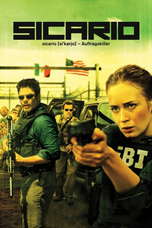

#2818 Sicario
Auszeichnungen: für 3 Oscars nominiert
 gesehen am 21.12.2015
gesehen am 21.12.2015
 
 IMDB-Wertung: 7.6 / 10
IMDB-Wertung: 7.6 / 10  Metascore: 82
Metascore: 82 
Mit Flip-Flops sitzt der Spezialagent Matt Graver im Konferenzraum des FBI. Sein Blick ist ernst, todernst, aber sein Körper entspannt, wie der eines Urlaubers. Draußen vor dem verglasten Besprechungszimmer wartet Kate, die gerade fast in die Luft gesprengt wurde, als sie mit einem Sondereinsatzkommando die texanische Basis eines mexikanischen Drogenkartells gestürmt hatte, in die unzählige Leichen eingemauert wurden. Sie hat sich noch kurz das Blut aus den Haaren waschen müssen, bevor sie zurück in die Zentrale kommt, in der Hoffnung auf Aufklärung und auf einen Zusammenhang, der sich ihr bis zum Ende nicht erschließen wird.
Jahr: 2015
Dauer: 121 Minuten
FSK: 16
Land: USA Studio: LionsgateTonspuren: DD5.1 - ,
Untertitel: Deutsch,
Auflösung: 1080p (1920x800) Größe: 8693 MB
Genre: Action, Thriller, Drama, Krimi, Mystery
Regisseur: Denis Villeneuve
Drehbuch: Taylor Sheridan
Soundtrack: Jóhann Jóhannsson
Darsteller:
 Emily Blunt als Kate Macer
Emily Blunt als Kate Macer Benicio Del Toro als Alejandro
Benicio Del Toro als Alejandro Josh Brolin als Matt Graver
Josh Brolin als Matt Graver Victor Garber als Dave Jennings
Victor Garber als Dave Jennings Jon Bernthal als Ted
Jon Bernthal als Ted Daniel Kaluuya als Reggie Wayne
Daniel Kaluuya als Reggie Wayne Jeffrey Donovan als Steve Forsing
Jeffrey Donovan als Steve Forsing Raoul Max Trujillo als Rafael
Raoul Max Trujillo als Rafael Julio Cedillo als Fausto Alarcon
Julio Cedillo als Fausto Alarcon Hank Rogerson als Phil Coopers
Hank Rogerson als Phil Coopers Bernardo Saracino als Manuel Diaz
Bernardo Saracino als Manuel Diaz Maximiliano Hernández als Silvio
Maximiliano Hernández als Silvio Kevin Wiggins als Burnett
Kevin Wiggins als Burnett Edgar Arreola als Guillermo
Edgar Arreola als Guillermo- Kim Larrichio als Silvio's Wife
 Dylan Kenin als Delta Leader
Dylan Kenin als Delta Leader John Trejo als Delta #2
John Trejo als Delta #2- Marty Lindsey als SWAT Officer
 Alex Knight als Coroner, Phoenix
Alex Knight als Coroner, Phoenix Rio Alexander als Phoenix Cop
Rio Alexander als Phoenix Cop- Eric Steinig als Air Force MP
 Vic Browder als US Marshal
Vic Browder als US Marshal- David Garver als Bob Fisks
- Jesse Ramirez als Migrant #1
- Alejandro S. Rodriguez als Migrant #5
- Johnny Palomarez Jr. als Migrant #7
- Eb Lottimer als Bank Manager
 Matthew Tompkins als Jessie Garza
Matthew Tompkins als Jessie Garza- Michael Sheets als Treasury Agent
 Sarah Minnich als Reggie's Dance Partner
Sarah Minnich als Reggie's Dance Partner Matthew Page als Operator
Matthew Page als Operator Lora Martinez-Cunningham als Jacinta
Lora Martinez-Cunningham als Jacinta- Antonio Leyba als Border Bandit #1
- Jesus Mayorga als Border Bandit #4
- Joseph P. Santillanes als Homeland Security Officer
- Ivan Allen als News Anchor
 John Burke als Chandler News Reporter
John Burke als Chandler News Reporter- Edward Butron als AIC Guard , uncredited
- Paul Caster als Driver / Event Attendee , uncredited
- Jetto Dorsainville als Military police , uncredited
 Tait Fletcher als Soldier , uncredited
Tait Fletcher als Soldier , uncredited- Andrea Good als Immigrant , uncredited
- Alan Humphrey als Police Officer , uncredited
- Jameson Macmillan als Driver in Pickup , uncredited
- Trista Marchetto als Waitress , uncredited
- Jose B. Martinez als Immigrant , uncredited
- Patrick V. Murphy als Immigrant , uncredited
- John Nussbaumer als Homeland Security Official , uncredited
- Larry Nuñez als Tunnel Bandit , uncredited
 Stephen Oyoung als Delta Driver , uncredited
Stephen Oyoung als Delta Driver , uncredited
Datei: X:\2-Dilogie(N-Z)\Sicario\Sicario (2015, FSK16, 1920x800).mkv seit 20.12.2015
Festplatte: HD Collection-2(A-Z)-3(A-M)
 Alle Filme aus Gruppe '2-Dilogie(N-Z)\Sicario'
Alle Filme aus Gruppe '2-Dilogie(N-Z)\Sicario'